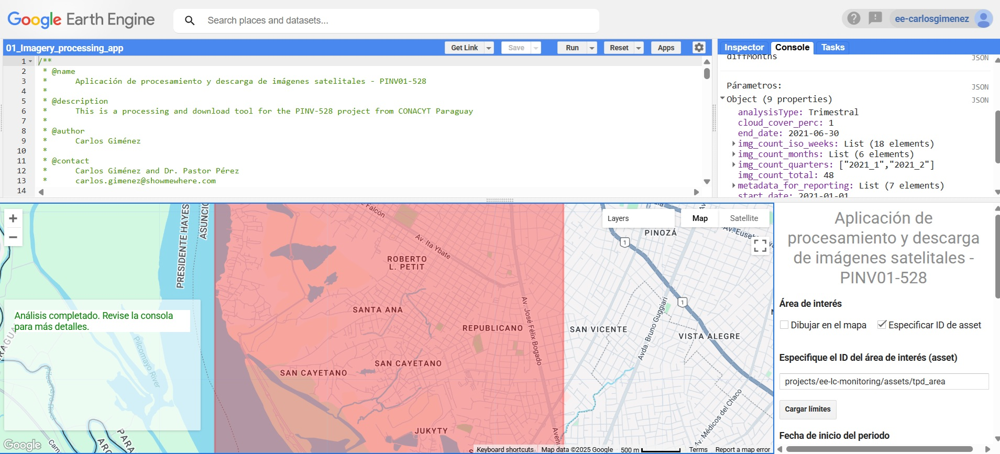

Land use and landcover classification results for the Parguayan Chaco in 2014 and 2019:
Ver la appLand use and landcover classification results for the Acre state, Brazil:
Ver la appSentinel 2 image processing App:
To the App Esta herramienta se ha generado a partir de la cooperación técnica de la Organización Panamericana de la Salud (OPS) y el Ministerio de Salud Pública y Bienestar Social (MSPyBS) El objetivo del sitio es de servir como herramienta interactiva para el monitoreo de la incidencia de la enfermedad COVID-19 y de la variación en el desplazamiento de la población como respuesta a las restricciones de movilidad y al desarrollo de la pandemia.:
Ver la app